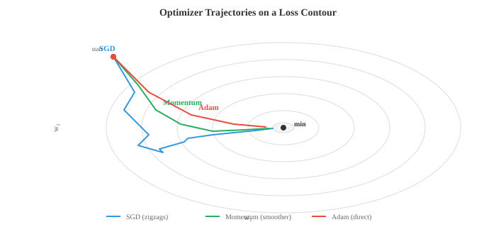

Maths, CS & AI Compendium · Chapter 06
Fitting, Overfitting, Momentum
This is the pivot. Chapters 01–05 were preparation; here they stop being preparation and become the subject. A model is a function with parameters (Ch 01–02), fitted by walking downhill (Ch 03), judged on a sample (Ch 04), against a loss that is a surprisal (Ch 05). Every piece is already in your hands.
It is also the largest chapter in the compendium — five sub-fields in one file. Rather than thin everything equally, this page goes deep where the mechanical correspondence is exact and states plainly where it is compressing. §13 is an honest inventory of what got compressed.
The headline result is in §05, and it is worth knowing before you start. Momentum — the single most important trick in optimisation — is a mass on a damped spring. Not a metaphor: the update rule is the discretised equation of motion, \(\beta\) sets the damping ratio, and tuning it is choosing between underdamped overshoot and overdamped sluggishness. You have solved this exact problem in vibrations.
The bridge
| What you already know | What ML calls it | How good is the match? |
|---|---|---|
| Damped mass–spring, damping ratio \(\zeta\) | SGD with momentum | Exact. Same ODE, discretised. See §05. |
| Moment of inertia about a centroid | k-means objective | Exact — scikit-learn calls it inertia_. |
| Factor of safety, binding constraint | SVM margin, support vectors | Same structure. Maximise the clearance. |
| 2-out-of-3 voting, redundancy | Ensembles, random forests | Exact, including the \(\sqrt{n}\). |
| Troubleshooting flowchart | Decision tree | Identical object. |
| Annealing — controlled cooling | Learning-rate schedule | The name is literal, borrowed from metallurgy. |
| Accuracy vs precision of an instrument | Bias vs variance | Exact. See §07. |
| Producer's and consumer's risk (Ch 04–05) | Precision and recall | The same four counts. See §08. |
| Springs in series, \(1/k_{eq}=\sum 1/k_i\) | F1 score | Same harmonic mean. |
| Assembly line with idle stations | Pipeline parallelism & bubbles | Identical problem. See §11. |
| Cost-to-go in optimal control | Value function, Bellman equation | The same equation. |
| Tension-only member (Ch 02) | ReLU | Same constitutive law. |
| A design with one correct answer | A trained model | Nothing like it. See §12. |
Strip away the vocabulary and machine learning is curve fitting with the curve chosen automatically. You have:
Supervised learning has labelled examples — inputs with known correct outputs, like a calibration dataset. Unsupervised learning has none, and must find structure itself. Reinforcement learning has neither, only a reward signal arriving after a sequence of decisions, which is §10.
Fitting \(y=mx+c\) to lab data by least squares is supervised learning with two parameters, and Chapter 05 §06 showed it is maximum likelihood under Gaussian noise. Everything in this chapter is that, scaled up: more parameters, a nastier loss surface, and a serious worry about whether the fit generalises. The worry is the genuinely new part — your calibration curve never had to work on a machine it had not seen.
The source catalogues Naive Bayes, k-NN, decision trees, random forests, SVMs, k-means and PCA. Four of those have exact mechanical readings worth spelling out.
Decision trees
A decision tree asks a sequence of threshold questions — "is temperature above 80°C?" — splitting the data at each node until the leaves are pure. That is a troubleshooting flowchart, the thing at the back of every service manual, with one difference: the questions and thresholds are chosen from data rather than by an experienced technician.
The choice criterion is information gain: pick the split that most reduces entropy. That is Chapter 05 §08 doing real work — information gain is the mutual information between the split and the label, so the tree is greedily choosing the question that tells it the most bits.
Gini impurity \(1-\sum p_i^2\) is a cheaper surrogate that behaves almost identically and avoids computing logarithms.
k-nearest neighbours
Classify a point by the majority vote of its \(k\) closest neighbours. No training at all — the data is the model. And it rests entirely on Chapter 01: the distance metric you choose, and the scaling of your features. Chapter 01 §02's unit-flip demonstration was exactly a k-NN failure, and it is the classic way this method goes wrong.
Support vector machines
An SVM does not just find a separating boundary; it finds the one with the largest margin — the greatest clearance to the nearest data point on either side. That is a design philosophy you already hold: do not merely satisfy the constraint, satisfy it with the largest reserve you can afford.
The support vectors are the handful of points that touch the margin, and they alone determine the boundary — move any other point and nothing changes. Those are your binding constraints: in an optimisation under limits, only the active constraints shape the answer. Chapter 03 §07 called them exactly that, and the Lagrange multipliers that solve an SVM are the same multipliers that were rod tensions there.
k-means
k-means places \(k\) centres and assigns each point to its nearest, minimising
Look at what that sum is. Each cluster contributes the sum of squared distances from its
own centroid — a second moment of area about a centroidal axis,
exactly as Chapter 04 §01 established. k-means is placing \(k\) centroids to minimise
total moment of inertia. This is not a loose reading: scikit-learn's attribute for the
converged objective is literally named inertia_. And the algorithm —
assign points, recompute centroids, repeat — is just alternating between the two
halves of a centroid calculation.


Bagging trains many models on bootstrap resamples and averages them. A random forest is bagged decision trees with an extra twist: each split considers only a random subset of features, which decorrelates the trees. Boosting is different in spirit — each new model is fitted to the residual errors of the ones before it, which is successive approximation, the same idea as iterating a Newton–Raphson correction.
Chapter 05 §03 computed the reliability of redundant systems with majority voting. An ensemble is that, with models in place of sensors. The averaging argument is Chapter 04's \(\sqrt{n}\): if \(n\) models each have error variance \(\sigma^2\) and their errors are independent, the average has variance
That is the standard error again, and it is the entire mathematical case for ensembles. It also carries Chapter 05 §09's warning intact: the \(1/n\) requires independence. Correlated models are common-cause failure — ten trees trained on the same biased data all fail the same way, and averaging them buys almost nothing. Random forests inject randomness into feature selection for precisely this reason: to decorrelate the members, exactly as you would separate redundant sensors onto different power supplies.

Linear regression fits \(\hat{y}=\mathbf{w}^T\mathbf{x}+b\) by minimising squared error — which Chapter 05 §06 showed is maximum likelihood under Gaussian noise. Logistic regression handles classification by squashing the same linear combination through a sigmoid to produce a probability:
and is trained with cross-entropy loss — which Chapter 05 §08 showed is the surprisal of the correct answer. Note what the sigmoid is doing physically: it is a saturating response. Push the input far either way and the output pins at 0 or 1, exactly like a component against a hard stop. That saturation is also why sigmoid units stop learning when driven hard — the gradient there is nearly zero, which is the vanishing-gradient problem of Chapter 03 §02 arriving from a different direction.
The loss you choose encodes what you consider a bad error:
| Loss | Penalises | Use when |
|---|---|---|
| Mean squared error | \(\varepsilon^2\) — one big error dominates | Errors are Gaussian, outliers are genuine |
| Mean absolute error | \(|\varepsilon|\) — all errors count equally | Outliers are noise you do not trust |
| Huber | Squared near zero, linear far out | You want both — the practical default |
| Cross-entropy | \(-\log \hat{p}_{\text{true}}\) | Classification. Confident and wrong is ruinous |
| Hinge | Violating the margin | SVMs — you want clearance, not probability |
Chapter 03 §06 left gradient descent in a bad place: on an ill-conditioned problem it zigzags across the valley, and the best possible rate with a constant step is \((\kappa-1)/(\kappa+1)\) per iteration — \(0.980\) at \(\kappa=100\), which needs about 231 steps to make 1% progress. Momentum fixes this, and it fixes it by being a mechanism you have already analysed.
The update rule, in the source's form:
Eliminate \(\mathbf{v}\) and you get a two-step recurrence in \(\mathbf{w}\) alone:
A second difference in position, a first difference in position, and a force term. Take the continuous limit and it is
A mass sliding in a potential well against viscous damping. The loss surface is the potential, \(-\nabla\mathcal{L}\) is the restoring force, and the two hyperparameters map onto the two physical quantities: \(\eta\) sets the timestep and \(\beta\) sets the ratio of inertia to damping. Plain gradient descent is the \(\beta=0\) case — massless, fully overdamped, no memory of where it was going.
Which means the shape of the tuning problem is one you have solved. Underdamped (\(\beta\) too high): overshoot and ringing around the minimum, and slow with it. Overdamped (\(\beta\) too low): safe, monotonic, slow. Critically damped: the fastest approach. Those three regimes are real, the \(\beta\) slider walks you through them, and the readout names which one you are in.
The usual way this is taught — and the sentence this page had in an earlier draft — is that momentum cancels the transverse oscillation: the contributions from opposite walls of the valley annihilate while the downhill component accumulates. It is a satisfying picture. At the optimal tuning it is false, and the panel below shows it plainly, so it is worth being exact about what actually happens.
Run \(\kappa=20\) at the optimum and count the crossings. The momentum path changes the sign of its stiff coordinate on every single step — 40 flips in 40 steps — which is precisely what plain descent does. It does not cross less. It crosses further: its worst excursion is \(1.71\) against plain descent’s \(1.00\). What changes is the rate at which the crossings die, \(0.62\) per step against \(0.90\), and what that buys along the valley: after 20 steps the soft coordinate has fallen 147 times further than plain descent managed.
So the honest statement is not that momentum damps the zigzag. It is that momentum lets you take a step plain descent could not survive — the effective step here is \(0.134\), past plain descent’s stability limit \(2/\lambda_{\max}=0.100\), the limit Chapter 03 §06 derived — and then holds the resulting oscillation to a faster decay than that step would otherwise produce. The \(\beta\) term is not there to smooth the path. It is there to buy stability at a step size that would otherwise diverge, and the speed comes from the step.
The tuning results quoted below and in §14 are stated for the heavy-ball form, \(\mathbf{v}_t=\beta\mathbf{v}_{t-1}+\nabla\mathcal{L}\), \(\mathbf{w}\leftarrow\mathbf{w}-\alpha\mathbf{v}_t\), which has no \((1-\beta)\) factor. The source writes the normalised form above, where \(\mathbf{v}_t\) is a running average of the gradient rather than a running sum. The two generate identical trajectories, but only if you translate the step:
This matters in practice. Raising \(\beta\) in the normalised form shrinks the effective step, so turning momentum up while leaving \(\eta\) alone is not the experiment you think you are running. Substituting the optimal \(\alpha^\ast\) and \(\beta^\ast\) from §14 and simplifying gives the optimal \(\eta\) directly:
That is worth pausing on, because it is the whole square root in one line. Plain gradient descent’s best step is \(2/(\lambda_{\max}+\lambda_{\min})\) — set by the arithmetic mean of the curvature extremes, which the large eigenvalue dominates. Momentum’s best step is the reciprocal of their geometric mean. A geometric mean is the square root of a product, so the ratio it produces is \(\sqrt{\lambda_{\max}/\lambda_{\min}}=\sqrt{\kappa}\). The condition number does not go under a square root by accident or by a clever trick; it goes there because the optimal step stops being an average and starts being a geometric mean. At \(\kappa=100\) with \(\lambda_{\min}=1\) this gives \(\eta^\ast=1/\sqrt{100}=0.1\) exactly.
The payoff is quantitative and large. With optimally tuned momentum the convergence rate on a quadratic improves from \((\kappa-1)/(\kappa+1)\) to
The condition number moves under a square root. At \(\kappa=100\) the rate falls from \(0.980\) to \(0.818\), and the steps needed for 1% progress drop from about 231 to 23 — a tenfold speedup, from adding a mass term. This is why essentially no one runs plain gradient descent.
Gradient descent is zigzagging violently across a narrow valley. You add momentum — inertia — to the update. What happens to the zigzag?
plain
momentum
(κ−1)/(κ+1)
(√κ−1)/(√κ+1)
1/√(λmaxλmin)
momentum

Momentum fixes the direction. The other half of the problem is that different parameters need different step sizes — some sit in steep directions, others in shallow ones, and one global \(\eta\) serves neither well. Adagrad, RMSprop and Adam attack this by tracking a running average of squared gradients per parameter and dividing the step by its square root. Adam combines both ideas:
\(m_t\) is the momentum of §05; \(v_t\) is a per-parameter scale estimate. Both are exponential moving averages — the same EMA from Chapter 04 §02. Mechanically, dividing by \(\sqrt{v}\) is preconditioning: rescaling each degree of freedom by its own stiffness so that a single step size suits all of them. It is Chapter 03 §06's observation that Newton's method is scale-free, approximated cheaply using only the diagonal — you cannot afford the full Hessian, so you estimate its diagonal from gradient history. AdamW corrects how weight decay interacts with this rescaling, and is the practical default for training large models.
Learning-rate schedules start \(\eta\) high and reduce it — step decay, cosine decay, warmup then decay. The name is not borrowed loosely: simulated annealing was named directly after the metallurgical process, and for the same reason. Cool a metal too fast and it locks into a poor, stressed configuration; cool it slowly and atoms have time to find a low-energy arrangement. High learning rate early lets the optimiser roam the loss surface; lowering it late lets it settle precisely. The warmup phase at the start — ramping \(\eta\) up from near zero — has no metallurgical counterpart; it exists because Adam's variance estimates are unreliable in the first few hundred steps.
Bias is systematic error from wrong assumptions — fitting a straight line to curved data. Variance is sensitivity to which particular sample you trained on — a high-degree polynomial chasing noise. Simple models have high bias and low variance; complex models the reverse.
This is the instrument distinction you were taught in your first measurements lab, and it is exact. Bias is inaccuracy: shots grouped tightly but off-centre, a micrometer with a zero error. Variance is imprecision: shots scattered around the target, a gauge with poor repeatability. Total expected error decomposes as \(\text{bias}^2+\text{variance}+\text{irreducible noise}\), and that third term is the measurement noise you can never remove — the Bayes error. You cannot fix a biased instrument by taking more readings, and you cannot fix an imprecise one by recalibrating. Same two failure modes, same two remedies.
Cross-validation is how you measure the tradeoff without a separate test set: split the data into \(k\) folds, train on \(k-1\), test on the held-out one, rotate. It is the same discipline as reserving test coupons from a heat batch — you do not certify a material using the specimens you used to set the process.
You have 12 noisy measurements from a smooth underlying process. You fit polynomials of rising degree. Which degree will give the lowest error on new, unseen data?
A classifier's output is a score; turning it into a decision needs a threshold, and where you put that threshold is a choice about which kind of error you prefer. The four counts should look familiar:
Recall is sensitivity. Precision is \(P(\text{fault}\mid \text{alarm})\) — the posterior from Chapter 05 §05, the number that came out at 16% for the vibration monitor. The whole base-rate lesson transfers intact: on a rare class, precision collapses even for an excellent classifier, and reporting "99% accuracy" hides it. Moving the threshold trades Chapter 04's producer's risk against consumer's risk, and the ROC curve is the operating characteristic curve of a sampling plan.
\(F_1\) has its own mechanical reading. It is the harmonic mean of precision and recall — the same average that governs springs in series, \(1/k_{eq}=\sum 1/k_i\), and parallel resistances. Harmonic means are dominated by the smallest term, which is exactly the behaviour you want here: a model with 99% precision and 2% recall scores \(F_1\approx0.039\), not 0.5. One weak link sets the strength of the chain.
You lower the alarm threshold so the detector triggers more readily. What happens to precision and recall?
Chapter 02 §09 established the core fact: stacking linear layers buys nothing, because they collapse into one matrix, exactly as linear springs in series remain one spring. A deep network is layers of \(W\mathbf{x}+\mathbf{b}\) with a nonlinearity between them, and the nonlinearity is what makes depth mean anything.
| Activation | Behaviour | Mechanical reading |
|---|---|---|
| ReLU \(\max(0,z)\) | Passes positive, blocks negative | Tension-only member; a gap element in contact |
| Sigmoid | Saturates at 0 and 1 | A hard stop; output pins and the gradient dies |
| Tanh | Saturates at ±1, zero-centred | A symmetric stop |
| GELU, Swish | Smooth, near-ReLU | A fillet rather than a sharp corner — no kink to worry about |
Normalisation layers — BatchNorm, LayerNorm — rescale activations to zero mean and unit variance partway through the network. That is Chapter 01 §02's standardisation, applied not once to the input but repeatedly inside the model, to stop the scale of signals drifting as they propagate through layers. LayerNorm normalises across features within one sample and is what transformers use.
Weight initialisation (Xavier, He) sets the starting variance so signal neither explodes nor vanishes across depth — the same gear-train product from Chapter 03 §02, managed at setup rather than left to chance.
Convolutions slide a small fixed kernel across the input. Chapter 02 §04 already named the structure: a convolution is multiplication by a Toeplitz matrix, constant along each diagonal. It is also exactly what a filter does to a vibration signal — convolution with an impulse response. A CNN learns its filters rather than being handed them.
Skip connections add a layer's input to its output, \(\mathbf{y}=f(\mathbf{x})+\mathbf{x}\). Mechanically this is a parallel load path: if the main path contributes nothing useful, the bypass still carries the signal through, so gradient reaches early layers regardless of what the intervening ones do. Residual networks are redundant structures.
Attention is Chapter 01 §08's duality pairing: queries measure keys by dot product, softmax turns the scores into weights, and those weights mix the values. Chapter 07 develops it properly.

An agent observes a state, takes an action, receives a reward, and lands in a new state. The formal object is a Markov decision process — Chapter 05's Markov chain with actions and rewards bolted on. The goal is a policy maximising expected discounted return.
The value function \(V(s)\) is the expected return from state \(s\) onward, and it satisfies the Bellman equation:
If you have met dynamic programming in optimal control, this is the same recursion under a different name — \(V\) is the cost-to-go, and Bellman's principle of optimality is the statement that an optimal path's tail is itself optimal. Reinforcement learning is optimal control for the case where you do not have a model of the plant: \(P(s'\mid s,a)\) is unknown, so instead of solving the recursion you estimate it by acting and observing. Model-based RL learns the plant model first; model-free methods such as Q-learning skip it and learn the value function directly.
Temporal difference learning updates estimates toward a bootstrapped target rather than waiting for the episode to end — an error-driven correction, structurally the same as any recursive estimator. Exploration versus exploitation is the design-of-experiments question: spend effort probing conditions you have not tried, or run at the best setting you know? PPO constrains how far the policy may move in one update, which is a trust region — a step limiter, for exactly the reason Chapter 03 §06 limited the learning rate.
RLHF and DPO apply this to language models, using human preference comparisons as the reward signal. That is how a model is tuned to be helpful rather than merely predictive.

Training a large model does not fit on one GPU. What has to be split, and how, is a production-engineering problem, and the vocabulary maps almost word for word.
| Strategy | What is split | Production analogue |
|---|---|---|
| Data parallelism | The batch. Every device holds the whole model | Parallel identical production lines, outputs pooled |
| Tensor parallelism | Individual matrices, across devices | Two operators on one large workpiece at the same station |
| Pipeline parallelism | Layers into sequential stages | A classic assembly line, one station per stage |
| ZeRO / FSDP | Optimiser state and gradients, sharded | Distributed tooling storage — nobody keeps a full set |
| Mixture of Experts | Which sub-model handles which input | Specialised cells; each part is routed to the right one |
Split a network into four pipeline stages on four GPUs and the first batch occupies stage 1 while stages 2–4 sit idle; the tail of the batch leaves stages 1–3 idle. That idle time is called a bubble, and it is exactly the start-up and run-out idle time on an assembly line. The fix is the same one a production engineer reaches for: feed micro-batches so several units are in flight at once, and balance the stages so no station is slower than the rest. An unbalanced pipeline is throttled by its slowest stage — the bottleneck, and Chapter 13's Amdahl's law is the formal version of the same complaint.
Ring all-reduce is how gradients are averaged across devices: each passes partial sums to its neighbour around a ring, so total communication is independent of device count rather than growing with it. Mixed precision stores weights in 16-bit formats while accumulating in 32-bit — the significant-figures discipline of any numerical calculation, where you carry more digits through intermediate steps than you quote at the end. Gradient checkpointing trades compute for memory by discarding intermediate activations and recomputing them during the backward pass.

Where engineering intuition breaks
beyond the chapterA statically determinate structure has one solution. Train the same architecture twice with different random seeds and you get two different models — different weights, different mistakes — performing about equally well. There is no unique right answer to converge to, only a large set of adequate ones. This is why ML results are reported as means over seeds, and why "it worked on my run" is a weak claim.
When a beam deflects too much you can trace the cause: this load, that section modulus, this span. When a model misclassifies, there is no equivalent trace. The behaviour lives in billions of weights with no individually meaningful interpretation. Tools exist — saliency maps, SHAP, probing — but they give approximate, contested explanations, not derivations. For an engineer used to root-causing failures this is the most uncomfortable property of the field, and it is genuinely unsolved.
Chapter 04 §09 said a statistic is an estimate. Here it is worse: every time you consult the test set to choose a model, you leak information about it into your decisions, and it becomes a slightly weaker estimate of true performance. Benchmarks that a field optimises against for years stop measuring capability and start measuring benchmark-fit. And a model that scores well on data resembling its training set can fail completely under distribution shift — a new sensor, a new supplier, a new season. The test set is a coupon from the same heat; it says nothing about a different batch.
You select a bearing from a catalogue using a rated-life equation. There is no equivalent for choosing a learning rate, a layer count, or a batch size — those come from search, folklore and analogy to what worked elsewhere. §05 is a rare exception where real theory exists, which is precisely why it is worth knowing. Most of the rest is empirical, and honest practitioners say so.
This one is worth stating carefully, because §05 leans on the oscillator analogy harder than any other bridge in this sheet, and it has an exact edge.
A continuous system \(m\ddot{w}+c\dot{w}+kw=0\) has a characteristic equation whose roots are either real and negative — overdamped, decaying without ever crossing zero — or a complex pair, ringing at some finite frequency. Those are the only two options, and every intuition you carry from a vibrations course is built on that dichotomy.
Gradient descent with momentum is a difference equation, and its characteristic roots live in a different place: they are the roots of \(z^2-(1+\beta-\alpha\lambda)z+\beta\), and decay means \(|z|<1\) rather than a negative real part. That admits a case the continuous model has no name for — a root that is real and negative, meaning the coordinate flips sign on every step while its magnitude shrinks geometrically. It is oscillation at exactly one half-cycle per step: the fastest alternation a discrete system can express, and a frequency a continuous model cannot represent at all.
And that case is not a curiosity at the edge of the parameter range. It is where the optimum lives: at \(\beta^\ast\), the stiff mode’s root is the negative real double root \(-(\sqrt{\kappa}-1)/(\sqrt{\kappa}+1)\), which is why the §05 panel keeps crossing the valley no matter how well you tune it. The analogy gets you the structure — inertia against damping, three regimes, a trade-off with a sweet spot — and it is genuinely load-bearing for that. It does not get you the behaviour at the sweet spot. For that you have to look at the roots.
What is missing — including from this page
beyond the chapterThis is the largest chapter in the compendium, five sub-fields in one file, and this page compresses it further. Both compressions should be visible to you.
- Naive Bayes and k-NN details — the source gives multinomial, Gaussian and Bernoulli variants; here they get a paragraph.
- The optimiser zoo — Adagrad, RMSprop, LION, Muon, schedule-free methods are all in the source. §06 covers the principle and Adam; the rest are variations on it.
- Generative models — GANs, VAEs and diffusion appear in the source and are barely touched here. Chapters 08 and 10 develop them properly.
- RNN and LSTM internals — gate equations are in the source; Chapter 07 covers sequence models in depth.
- RL algorithm detail — SARSA, target networks, REINFORCE and actor–critic derivations are in the source.
- Interpretability as a discipline. SHAP and LIME get a mention in Chapter 19; the field is far larger, and §12 argues it is the gap that matters most to an engineer.
- Gaussian processes and Bayesian deep learning — models that report calibrated uncertainty rather than a bare prediction. For engineering use this is often exactly what you want.
- Causal machine learning — flagged in Chapter 05 §10 and still absent. Prediction is not intervention, and a model that predicts failure does not tell you what to change.
- Time series as its own subject — forecasting, seasonality, stationarity. Chapter 19 touches it for finance only.
- Fairness, robustness, adversarial examples — how models fail under deliberate or structural pressure.
- Active learning and experimental design for ML — choosing which data to label, which for expensive physical testing is the whole question.
For you specifically, the two worth chasing are Gaussian processes (models that admit when they do not know, which matters when a prediction feeds a safety decision) and active learning (each additional test specimen costs money, so which one should you make?).
Worked example: what momentum is worth
Take Chapter 03 §09's problem and finish it properly. Minimise \(f=\tfrac12(\kappa x^2+y^2)\) with \(\kappa=100\), so the Hessian eigenvalues are \(\lambda_{\max}=100\) and \(\lambda_{\min}=1\).
Plain gradient descent
The best constant step and the rate it achieves:
Steps to reach 1% of the starting error:
With momentum, optimally tuned
If you want to reproduce this in the §05 panel, which runs the source’s normalised form, translate the step first:
Set \(\beta=0.669\) with \(\eta=0.1\) — not \(\beta=0.669\) with \(\eta=0.0331\).
231 steps against 23 — a tenfold speedup, from one extra term that remembers the previous step. Note what \(\beta^\ast=0.669\) is and is not: it is the value that makes the two roots of the iteration coincide — critical damping in the strict sense — and it is not a promise of no overshoot. At the optimum the stiff mode’s root is real and negative, so that coordinate reverses sign on every step while its magnitude falls by \(0.818\). Push \(\beta\) above \(\beta^\ast\) and you do not merely start oscillating — you were already oscillating; you make the decay slower, which is an underdamped system doing what underdamped systems do.
Momentum takes the condition number under a square root: \(\kappa \to \sqrt{\kappa}\). At \(\kappa=100\) that is 10×; at \(\kappa=10{,}000\) it is 100×. Ill-conditioning is the fundamental obstacle to optimisation, and this is the cheapest available remedy — which is why every optimiser in practical use, Adam included, has a momentum term inside it.
Question bank
Tier 1 — recall
R1Write the momentum update and turn it into an equation of motion.
\(v_t=\beta v_{t-1}+(1-\beta)\nabla\mathcal L\), \(w\leftarrow w-\eta v_t\). Eliminating \(v\): \(w_{t+1}-w_t=\beta(w_t-w_{t-1})-\eta(1-\beta)\nabla\mathcal L\) — a second difference, a first difference and a force, i.e. \(m\ddot w+c\dot w+\nabla\mathcal L=0\). \(\beta\) sets inertia against damping; \(\beta=0\) is massless, fully overdamped gradient descent.
R2What does k-means minimise, and what is that quantity called in mechanics?
\(J=\sum_j\sum_{x\in C_j}\|x-\mu_j\|^2\) — the total second moment about the cluster centroids, i.e. a moment of inertia. scikit-learn names the converged value inertia_.
R3Define bias and variance and give the instrument analogue.
Bias is systematic error from wrong assumptions — inaccuracy, a micrometer with zero error. Variance is sensitivity to the training sample — imprecision, poor repeatability. Total error is \(\text{bias}^2+\text{variance}+\text{irreducible noise}\), the last being the Bayes error.
R4Write precision, recall and F1, and say what F1's average is.
\(P=TP/(TP+FP)\), \(R=TP/(TP+FN)\), \(F_1=2PR/(P+R)\) — the harmonic mean, the same average as springs in series. It is dominated by the smaller term, so 99% precision with 2% recall scores about 0.039.
R5What is information gain, in Chapter 05's language?
The mutual information between a candidate split and the label: \(H(\text{parent})-\sum_k\frac{n_k}{n}H(\text{child}_k)\). A decision tree greedily picks the question that reveals the most bits.
R6Why does an ensemble help, and what does the argument assume?
Averaging \(n\) models with independent errors of variance \(\sigma^2\) gives variance \(\sigma^2/n\) — Chapter 04's standard error. It assumes independence; correlated models are common-cause failure and averaging them gains little. Random forests decorrelate deliberately by randomising feature selection.
Tier 2 — apply
A1At \(\kappa=100\), how many steps does plain descent need for 1%? With optimal momentum?
Plain: \(\rho=(\kappa-1)/(\kappa+1)=0.9802\), \(n=\ln0.01/\ln0.9802\approx231\). Momentum: \(\rho=(\sqrt\kappa-1)/(\sqrt\kappa+1)=9/11=0.8182\), \(n\approx23\). Tenfold, because \(\kappa\) moves under a square root.
A2A detector has 99% precision and 2% recall. Compute F1 and say what it tells you.
\(F_1=2(0.99)(0.02)/(1.01)=0.0392\). The harmonic mean is pinned by the weak term — the detector is nearly useless despite excellent precision, because it finds almost nothing. An arithmetic mean would have said 0.505 and hidden this.
A3Your classifier reports 99% accuracy on a problem with a 1% positive rate. What do you conclude?
Nothing yet — predicting "negative" always achieves 99%. Ask for precision and recall, or the confusion matrix. This is Chapter 05 §09's "99% accurate is not one number", arriving as a model evaluation instead of an instrument spec.
A4Training error is zero and test error is climbing. Diagnose it, and give two fixes.
Overfitting — the model has capacity to memorise the sample including its noise. Fixes: reduce capacity (fewer parameters, lower degree), add regularisation (L1/L2 penalty, which Chapter 05 §06 showed is a prior), stop early, or get more data. Zero training error is a warning sign, not an achievement.
A5Four-stage pipeline, four GPUs, one batch at a time. What fraction of capacity is idle, and what fixes it?
With one batch in flight only one stage works at a time — 75% idle. Split the batch into micro-batches so several units are in flight, exactly as an assembly line keeps every station occupied, and balance the stages so none is slower than the others.
Tier 3 — judge
J1Why does adding inertia reduce rather than amplify the zigzag in a narrow valley?
The transverse component alternates in sign, so successive contributions to the velocity cancel; the axial component is consistent, so it accumulates. Momentum acts as a low-pass filter on the gradient sequence. Push \(\beta\) too high and you cross into underdamped behaviour and ring around the minimum — the same tradeoff as choosing a damping ratio.
J2A colleague reports a model beating the previous best on a public benchmark. What do you ask?
Whether the test set influenced any design choice (leakage through repeated consultation), how many seeds were run and what the spread was (§12: there is no unique answer), whether the gain exceeds that spread, and how it behaves under distribution shift. A benchmark a field has optimised against for years measures benchmark-fit as much as capability.
J3A model predicts bearing failure accurately. Management asks what to change to prevent failures. What is the problem?
Prediction is not intervention. The model has learned correlations that forecast failure; it has not learned which variables cause it, so acting on its inputs may change nothing. That is causal inference, flagged as absent in Chapter 05 §10 and §13 here. A feature can be a reliable predictor precisely because it is a symptom.
J4Ten decision trees trained on the same dataset disagree on 3% of cases. Is the ensemble ten times more reliable?
No. The \(\sigma/\sqrt n\) argument needs independent errors, and trees trained on one dataset share its biases — common-cause failure. Their agreement on the other 97% may reflect a shared blind spot rather than correctness. Bagging and feature randomisation exist to decorrelate them, and even then independence is partial.
J5You need a model whose prediction feeds a safety decision. What does this chapter not give you?
Calibrated uncertainty and an audit trail. A standard model outputs a point prediction with no honest confidence and no derivation you can check — §12's free-body-diagram problem. Gaussian processes and Bayesian deep learning address the first and are absent from the compendium (§13); interpretability addresses the second and is largely unsolved. For a safety case you would want both, plus a conventional analysis the model only advises.
What this chapter feeds
Chapter 07 is computational linguistics, and the single idea it builds on is attention — which you have now met three times: as a duality pairing in Chapter 01 §08, as a dot product in Chapter 01 §05, and as a layer in §09 here. Chapter 07 is where it becomes a transformer.
Do one thing, and make it this: take any dataset you have — test results, process logs, anything — and fit a model with scikit-learn in ten lines, then deliberately overfit it and watch the test score fall. Feeling that happen on your own data is worth more than the §07 panel. Then run the source chapter's coding tasks, which build a neural network from scratch.
Provenance and changes
A derivative work under Apache-2.0, which requires a statement of changes. Source references
link to the original files, pinned to commit 9850ee5. This chapter is the
compendium's largest and this page compresses it; §13 says exactly where.
| Section | Title | Source | Verdict | What changed |
|---|---|---|---|---|
| §00 | The bridge | — | added | Mapping table is mine. |
| §01 | What a model is | 01 | faithful | Framing is mine; the content is the source's opening. |
| §02 | Classical methods | 01 | compressed | Trees, k-NN, SVM and k-means kept; Naive Bayes and PCA reduced to a line. The k-means inertia identity and the SVM factor-of-safety reading are added. |
| §03 | Ensembles as redundancy | 01 | expanded | Bagging and boosting as in source. The redundancy reading and the independence warning are added. |
| §04 | Fitting by gradient | 02 | faithful | Regression, logistic regression and the loss catalogue as in source. |
| §05 | Momentum is a damper | 02 | expanded | The update rule and the rolling-ball image are the source's. The derivation to an equation of motion, the damping-ratio reading, and the \(\sqrt{\kappa}\) rate result are added. |
| §06 | Adam & annealing | 02 | compressed | Adam and schedules kept; Adagrad, RMSprop, LION, Muon reduced. The preconditioning and metallurgical-annealing readings are added. |
| §07 | Bias and variance | 02 | expanded | Source gives the definitions in two sentences. The accuracy/precision reading and the fitting panel are added. |
| §08 | Precision and recall | 02 | expanded | Metrics and ROC as in source. The link back to Chapter 05's posterior and the harmonic-mean reading are added. |
| §09 | Deep learning | 03 | compressed | Activations, normalisation, convolution and skip connections kept. GANs, VAEs, diffusion, RNN and LSTM internals deferred to later chapters; flagged in §13. |
| §10 | Reinforcement learning | 04 | compressed | MDPs, value functions, Bellman, PPO and RLHF kept at concept level; algorithm derivations deferred. The optimal-control reading is added. |
| §11 | Distributed training | 05 | faithful | All parallelism strategies as in source. The assembly-line and line-balancing readings are added. |
| §12–13 | Breaks; what is missing | — | added | Entirely mine. §13 audits both the source's gaps and this page's compressions. |
| §14 | Worked example | — | added | Mine; every value checked in verify_claims.py. |
Companion to Chapter 06 — Machine Learning of the Maths, CS & AI Compendium by Henry Ndubuaku. Figures marked from the compendium are reproduced from the repository. §§12 and 13 are added material and are marked as such.
Sheet 6 of 20. Built for a mechanical engineer with GATE-level mathematics and no prior CS.